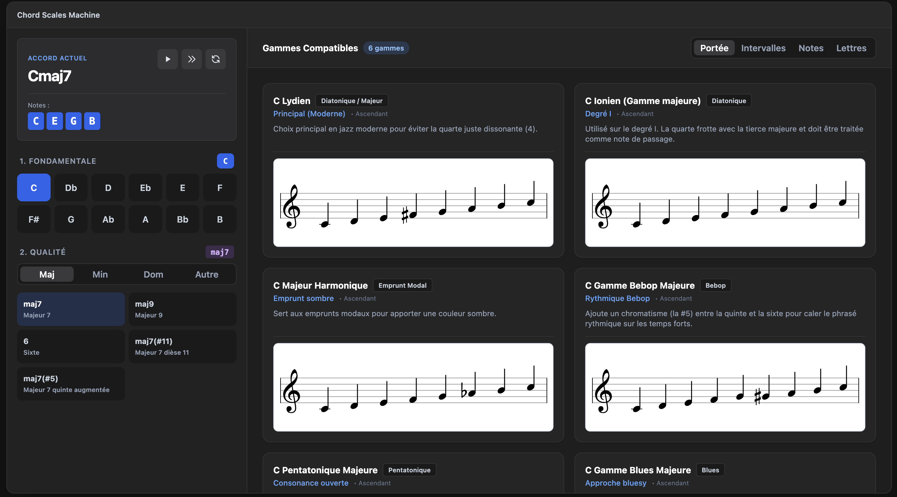

Metronome
Le temps découpé en tranches fines, dans une logique de pulsation et de durée.
OuvrirUne collection d’applications musicales et visuelles. Chaque projet explore le rythme, l’harmonie, la structure et le temps.
Le temps découpé en tranches fines, dans une logique de pulsation et de durée.
Ouvrir
Une cartographie des notes, pensée comme un réseau de relations et de chemins.
Ouvrir
Des gammes et des modes qui se mettent en mouvement dans une logique visuelle.
Ouvrir
Exploration des accords et des gammes pour construire des textures harmoniques.
Ouvrir